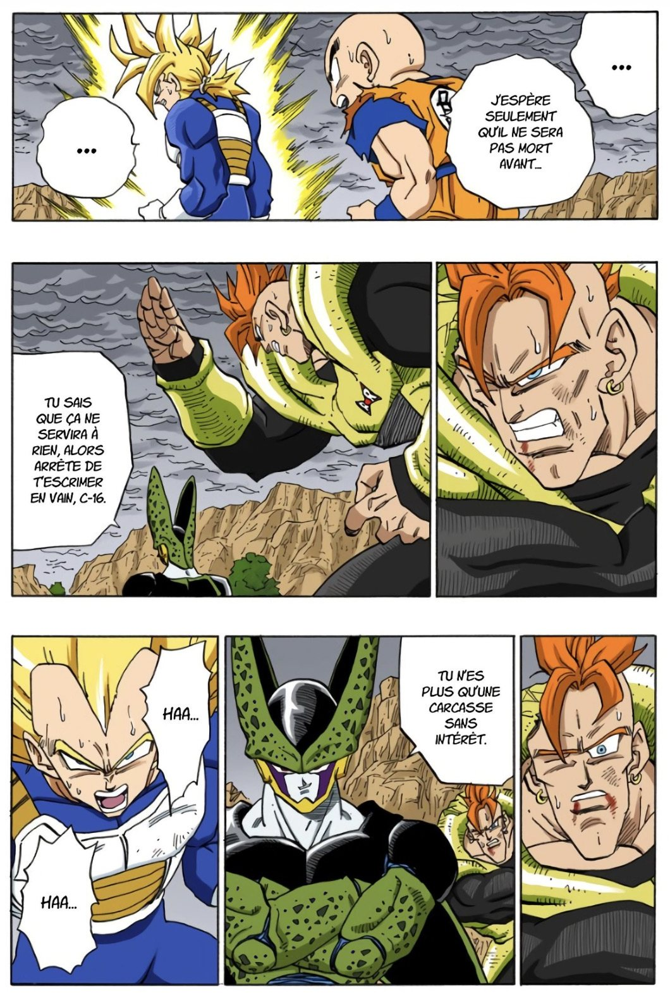
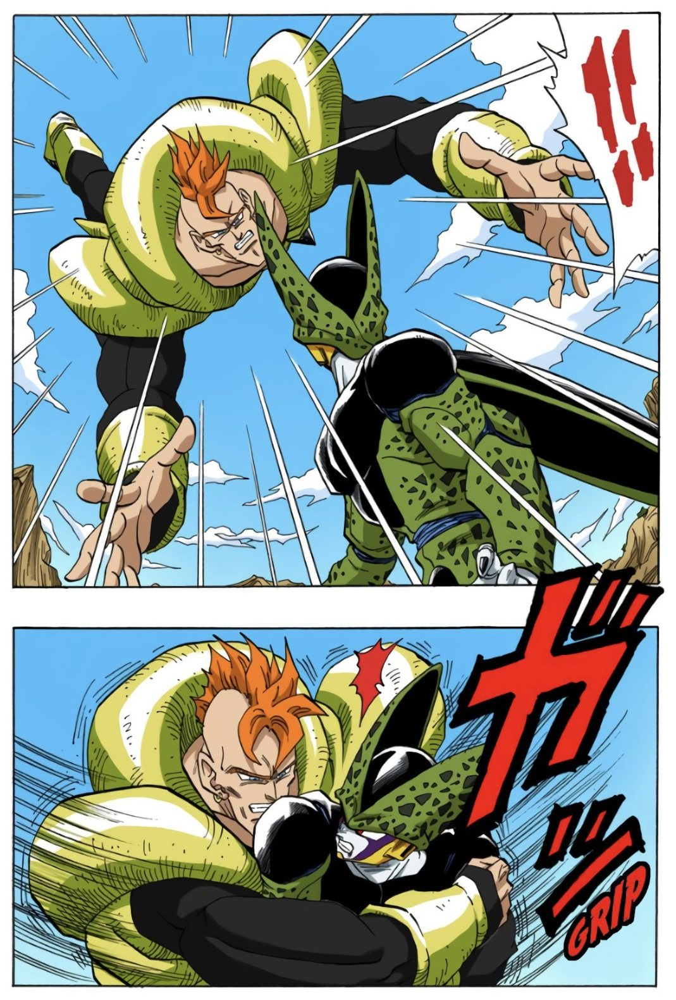
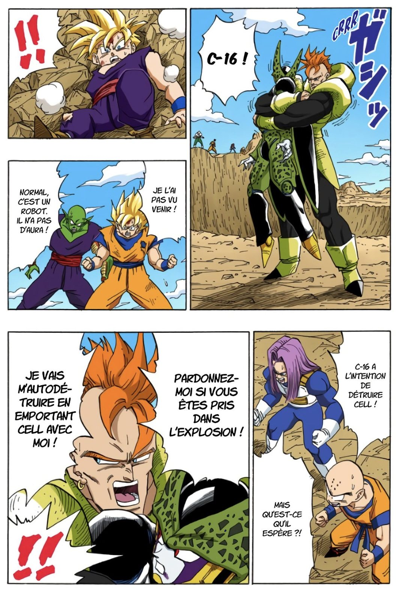
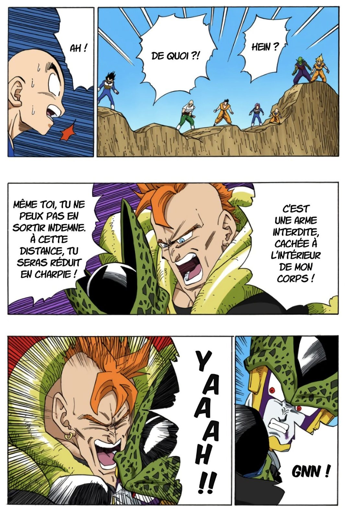
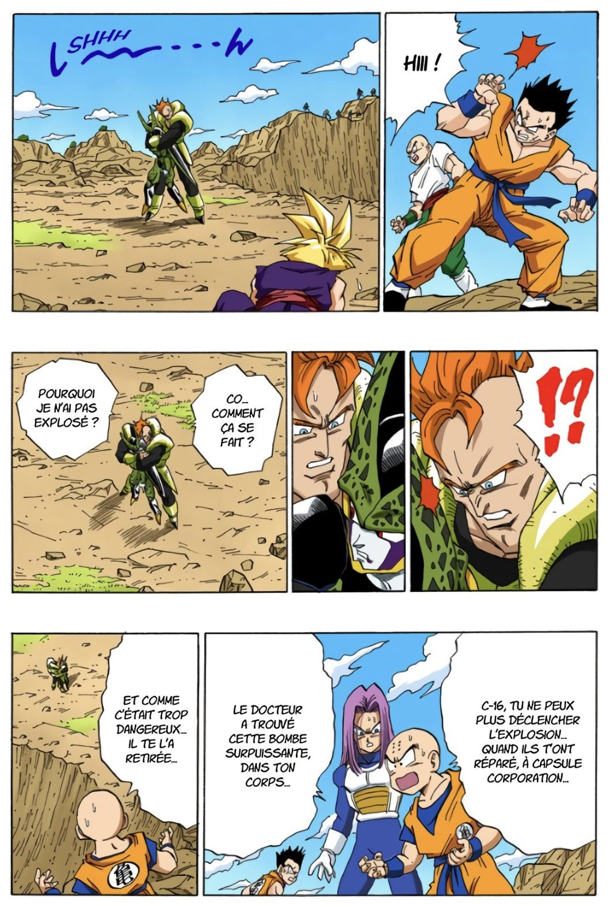
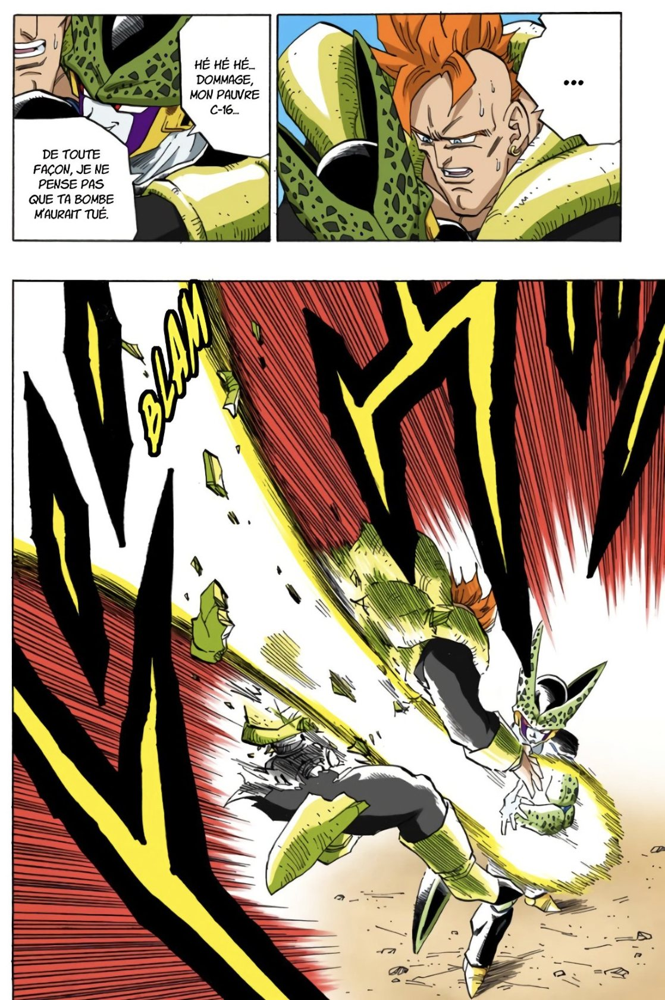

Sommaire de l’étude
C-16 est l’un des personnages les plus attachants de l’arc Cell. Androïde pacifique, amoureux de la nature, il finit par se dresser contre Cell au péril de son existence. Sa tentative d’autodestruction pendant le Cell Game est un moment fort.
Mais relisez la scène en gardant en tête ce que le manga vous avait montré quelques chapitres plus tôt. Le contraste est saisissant. Et c’est ce contraste, bien plus qu’une scène isolée, qui fait de C-16 un cas d’école.
01. Un même personnage, deux effets opposés
Nous avons défini, dans l’étude consacrée au Shin Kikoho, ce que nous appelons un boost magique : un ajustement apparent et ponctuel des rapports de force, que les règles jusque-là établies par le récit ne suffisent pas à expliquer. Le terme « magique » désigne l’absence d’explication narrative satisfaisante, et non un mécanisme réellement magique dans l’univers.
Le cas de C-16 a une particularité précieuse : Toriyama utilise le même personnage, face au même adversaire, pour produire deux effets presque opposés.
C-16 met Cell en valeur
Son intervention ne sert qu’à souligner la suprématie du nouvel antagoniste.
C-16 tient Cell en échec
Le même combattant immobilise Perfect Cell pendant une longue séquence.
Comme pour le Shin Kikoho, il n’est pas nécessaire de trancher entre boost de C-16 et nerf de Cell. C’est la relation entre les deux combattants qui pose question.
02. « Tu n’es plus qu’une carcasse sans intérêt »
La première planche est particulièrement éloquente. C-16 fond sur Cell. Cell ne prend même pas la peine de se retourner : il lui lance que cela ne servira à rien et lui demande d’arrêter de s’escrimer en vain. Puis, bras croisés, il conclut : « Tu n’es plus qu’une carcasse sans intérêt. »

Cell tourne le dos à l’attaque de C-16, puis le congédie sans même le regarder.
Tout, dans la composition de cette planche, participe à la mise en valeur de Perfect Cell : sa posture, son mépris, son calme absolu et la stupéfaction de C-16. Le rapport de force est posé sans ambiguïté. C-16 est hors course.
Retenez bien cette image : C-16 attaque, Cell lui tourne le dos… et l’attaque échoue quand même. Cell n’a pas besoin de le voir pour le dominer. Gardez-la en tête pour la suite.
03. L’étreinte
Pendant le Cell Game, C-16 surgit dans le dos de Cell et l’enserre. Personne ne l’a vu venir.

C-16 fond sur Cell par derrière et le ceinture de ses bras.

Piccolo explique la surprise ; C-16 annonce qu’il va s’autodétruire en emportant Cell.
Piccolo le rappelle explicitement : C-16 est un robot, il ne possède pas d’aura détectable. Cette particularité justifie parfaitement l’effet de surprise.
Mais revenez à la scène A. Cell tournait déjà le dos à C-16, et l’absence d’aura existait déjà. L’attaque avait pourtant échoué. Toriyama mobilise donc la même particularité, dans la même situation, pour deux résultats opposés : un échec qui valorise Cell, puis une réussite totale qui le met en échec.
Ce n’est pas nécessairement une incohérence en soi. C’est en revanche un excellent exemple de la manière dont la narration exploite les propriétés d’un personnage en fonction de ses besoins.
Surtout, l’absence d’aura explique que C-16 ait pu atteindre Cell. Elle n’explique en rien qu’il puisse le retenir.
04. Cell ne joue plus
La quatrième planche est capitale. C-16 révèle la puissance de sa bombe, une arme interdite cachée dans son corps. Observez le visage de Cell : les yeux écarquillés, les dents serrées, le « GNN ! ».

Toriyama mobilise les codes graphiques de la tension et de l’effort.
On est très loin du Cell nonchalant de la première planche. L’argument selon lequel Cell se laisserait volontairement immobiliser, par jeu ou par curiosité, devient donc particulièrement difficile à défendre. Cell ne joue plus : il veut se libérer.
05. Cinq planches d’immobilisation
Ce n’est pas tant la réussite de la prise qui pose problème que sa durée. Décomposons la séquence.

Un plan large marque un temps mort ; Krilin prend le temps d’expliquer le retrait de la bombe à Capsule Corporation.
Si Toriyama avait fait l’économie de la moitié des cases, nous aurions éventuellement pu lire cette scène comme la décomposition d’une action extrêmement rapide. Mais les dialogues s’enchaînent, les personnages réagissent, un silence s’installe, puis Krilin prend le temps d’expliquer pourquoi la bombe n’a pas explosé.
Le silence qui suit la tentative d’explosion est particulièrement parlant : Toriyama marque volontairement un temps d’attente, avec un plan large. Cela affaiblit considérablement l’hypothèse d’une simple décomposition au ralenti.
Pendant toute cette séquence, C-16 maintient son étreinte.
06. La libération instantanée
La dernière planche est presque une illustration parfaite du concept de boost magique.

Cell retrouve son sourire, puis se libère d’un seul tir.
Cell retrouve son sourire, relativise le danger que représentait la bombe, puis pulvérise le corps de C-16 avec une facilité déconcertante. Le rapport de force établi par la scène A est rétabli en une case.
Notez la manière dont il se libère : il ne force pas sur la prise, il projette son énergie. Rassemblons alors les deux faits que le manga nous montre :
Cell veut se libérer
Il est inquiet, crispé : il ne joue plus.
Cell peut se libérer
Un seul tir de ki lui suffit, sans même rompre la prise par la force.
S’il le voulait, et s’il le pouvait, pourquoi ne l’a-t-il pas fait pendant que C-16 tentait de déclencher sa bombe ?
Capacité apparente de C-16 à tenir tête à Cell
07. Les objections
Une démonstration n’a de valeur que si elle affronte les meilleures réponses qu’on peut lui opposer.
« C-16 a été réparé, et peut-être amélioré. »
C’est l’objection la plus sérieuse. Lors de la scène A, C-16 est déjà abîmé. Entre les deux scènes, il passe par Capsule Corporation. Mais que nous dit le manga ? Krilin parle de réparation, et du retrait de la bombe. Il ne parle d’aucune amélioration. Et même en parfait état, C-16 ne rivalisait qu’avec la première forme de Cell, bien avant que celui-ci n’atteigne sa perfection. Une amélioration capable de combler un tel écart serait un événement majeur : le récit n’aurait aucune raison de le passer sous silence.
« Cell s’amuse : il se laisse faire. »
La planche 4 répond d’elle-même. Les codes graphiques de la tension et de l’inquiétude ne laissent guère de place à cette lecture. Un Cell qui jouerait n’aurait pas besoin de serrer les dents face à une bombe qu’il juge, après coup, inoffensive.
« Une prise n’obéit pas aux mêmes règles que le ki. »
Peut-être. Mais il faudrait alors établir cette règle dans le manga, et non la supposer pour sauver la scène. Inventer une explication n’est pas trouver une explication. Cette question de l’étreinte qui retient un adversaire beaucoup plus fort dépasse d’ailleurs le seul cas de C-16 : elle fera l’objet d’un examen à part entière dans ce dossier.
08. Une puissance de circonstance
Lors de l’apparition de Perfect Cell, Toriyama utilise C-16 pour mettre en valeur la suprématie du nouvel antagoniste. Quelques chapitres plus tard, ce même C-16 parvient à l’immobiliser, le temps d’une longue scène, sous le regard inquiet de Cell.
L’absence d’aura justifie la surprise. Elle ne justifie pas l’étreinte. Et sitôt la menace écartée, Cell rétablit en une case le rapport de force que le récit avait posé.
D’où C-16 tirait-il cette capacité momentanée ? Le manga ne nous le dit pas. C’est ce que nous appelons, par convention, un boost magique.
Comme pour Tenshinhan, il ne s’agit pas de bouder notre plaisir : le sacrifice de C-16 est un beau moment. Il s’agit de remarquer que la puissance d’un personnage peut, chez Toriyama, dépendre moins des règles du récit que de la fonction qu’il occupe dans la scène.
Source principale : Dragon Ball, Akira Toriyama / Shueisha, manga original, arc Cell. Les références exactes de chapitres et de pages restent à compléter.